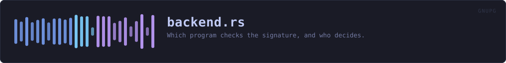

crates/veilvoice-gnupg/src/backend.rs
veilvoice-gnupg · 469 lines · read the source here · or on GitHub
Which program checks the signature, and who decides.
VeilVoice can check a release signature three ways, and the difference between them matters more than it looks.
1. Built in. The check in this binary, written in Rust, with no external program involved. It always works, on every platform, with nothing installed. 2. A gpg on this machine. GnuPG itself, the reference implementation, run as a separate program. 3. A gpg inside WSL, on Windows. The same GnuPG, in a Linux distribution alongside Windows, reached through wsl.exe.
Why the built-in check is not enough on its own, and why it is the default
Both things are true at once.
The built-in check is the one telling you a download is genuine, and it came out of that download. A tampered release ships a tampered checker. That is not a hypothetical objection to fix by writing better code: no program can vouch for itself, and this one says so on the tab. GnuPG is a second opinion from software this project did not write, and having one is the entire point of running it.
And yet nothing here reaches for GnuPG on its own. An external checker is used only when the person using VeilVoice has chosen it, even when one was already installed long before VeilVoice first ran. Running another program is a thing a privacy tool should do because it was asked to, not because it found something on PATH; on Windows the WSL route starts a whole Linux distribution, which is not a side effect to have by accident.
So: the default is the built-in check, the tab says what else is available, and choosing one is one press. That is the honest arrangement. It is not the most convenient one.
What this module does not do
It does not run anything to find out what is here. Survey is a value somebody else fills in, and every decision below is made from it, so the rules can be tested without a gpg, without a WSL, and without a Windows machine.
WHAT THIS FILE CONTAINS
469 lines defining 12 functions (11 public), 5 types and 1 constant. Everything below is read out of the source, so it cannot disagree with the code.
The types it owns.
enum Choiceline 51 · What the person using VeilVoice chose.struct Wslline 86 · A gpg reached through WSL.struct Surveyline 96 · What is on this machine.enum Backendline 116 · Which checker will actually run, and why.enum Becauseline 135 · Why the built-in check is the one running.
What happens when it runs. These are the ways in: public, and nothing else in this file calls them, so they are what an outside caller reaches first.
Choice::keyline 62 · The name this is stored under, in settings and on the command line.Choice::from_keyline 71 · The choice with this name, if it is one.Survey::supportsline 105 · Whether a choice could actually be used right now.Because::plainlyline 146 · What to tell the reader.resolveline 172 · The checker to use, from what was chosen and what is here.Backend::is_second_opinionline 206 · Whether an OpenPGP implementation other than this one is doing the work.Backend::plainlyline 211 · A one-line description for a reader.Backend::spellline 225 · How a command written for gpg is spelled for this backend.lookline 247 · What is here, without running anything.
reacheswsl_programlook_in_wslline 275 · Ask the WSL distribution where its gpg is.install_in_wslline 293 · The command that installs GnuPG inside the WSL distribution.
WHAT CALLS WHAT
The functions this file defines, and the calls between them. An edge means the callee's name appears, called, inside the caller's body. This is a syntactic reading, not a type-resolved one.
The same graph as Mermaid source
%%{init: {"theme":"base","themeVariables":{"background":"#1a1b26","primaryColor":"#1f2335","primaryTextColor":"#c0caf5","primaryBorderColor":"#7aa2f7","secondaryColor":"#16161e","tertiaryColor":"#16161e","lineColor":"#737aa2","textColor":"#c0caf5","mainBkg":"#1f2335","nodeBorder":"#7aa2f7","clusterBkg":"#16161e","clusterBorder":"#2f3549","fontFamily":"ui-monospace, SFMono-Regular, Consolas, monospace","fontSize":"14px"}}}%%
flowchart TD
n_key(["Choice::key<br/>line 62"])
n_from_key(["Choice::from_key<br/>line 71"])
n_supports(["Survey::supports<br/>line 105"])
n_plainly(["Because::plainly<br/>line 146"])
n_resolve(["resolve<br/>line 172"])
n_is_second_opinion(["Backend::is_second_opinion<br/>line 206"])
n_plainly(["Backend::plainly<br/>line 211"])
n_spell(["Backend::spell<br/>line 225"])
n_look(["look<br/>line 247"])
n_wsl_program["wsl_program<br/>line 255"]
n_look_in_wsl(["look_in_wsl<br/>line 275"])
n_install_in_wsl(["install_in_wsl<br/>line 293"])
n_look --> n_wsl_program
click n_key href "https://github.com/tilas01/veilvoice/blob/main/crates/veilvoice-gnupg/src/backend.rs#L62" "open the source"
click n_from_key href "https://github.com/tilas01/veilvoice/blob/main/crates/veilvoice-gnupg/src/backend.rs#L71" "open the source"
click n_supports href "https://github.com/tilas01/veilvoice/blob/main/crates/veilvoice-gnupg/src/backend.rs#L105" "open the source"
click n_plainly href "https://github.com/tilas01/veilvoice/blob/main/crates/veilvoice-gnupg/src/backend.rs#L146" "open the source"
click n_resolve href "https://github.com/tilas01/veilvoice/blob/main/crates/veilvoice-gnupg/src/backend.rs#L172" "open the source"
click n_is_second_opinion href "https://github.com/tilas01/veilvoice/blob/main/crates/veilvoice-gnupg/src/backend.rs#L206" "open the source"
click n_plainly href "https://github.com/tilas01/veilvoice/blob/main/crates/veilvoice-gnupg/src/backend.rs#L211" "open the source"
click n_spell href "https://github.com/tilas01/veilvoice/blob/main/crates/veilvoice-gnupg/src/backend.rs#L225" "open the source"
click n_look href "https://github.com/tilas01/veilvoice/blob/main/crates/veilvoice-gnupg/src/backend.rs#L247" "open the source"
click n_wsl_program href "https://github.com/tilas01/veilvoice/blob/main/crates/veilvoice-gnupg/src/backend.rs#L255" "open the source"
click n_look_in_wsl href "https://github.com/tilas01/veilvoice/blob/main/crates/veilvoice-gnupg/src/backend.rs#L275" "open the source"
click n_install_in_wsl href "https://github.com/tilas01/veilvoice/blob/main/crates/veilvoice-gnupg/src/backend.rs#L293" "open the source"
classDef entry fill:#1f2335,stroke:#7aa2f7,color:#c0caf5
class n_key,n_from_key,n_supports,n_plainly,n_resolve,n_is_second_opinion,n_plainly,n_spell,n_look,n_look_in_wsl,n_install_in_wsl entry
classDef helper fill:#1f2335,stroke:#bb9af7,color:#c0caf5
class n_wsl_program helperThis site loads no third-party script, so it cannot run Mermaid; the diagram above is the same nodes and edges drawn by the generator instead. GitHub renders the source below directly.
ITEMS
| Item | Line | Documentation |
|---|---|---|
Choice pub enum | 51 | What the person using VeilVoice chose. |
Choice::key pub fn | 62 | The name this is stored under, in settings and on the command line. |
Choice::from_key pub fn | 71 | The choice with this name, if it is one. |
Choice::ALL pub const | 81 | Every choice, in the order a front end should offer them. |
Wsl pub struct | 86 | A gpg reached through WSL. |
Survey pub struct | 96 | What is on this machine. |
Survey::supports pub fn | 105 | Whether a choice could actually be used right now. |
Backend pub enum | 116 | Which checker will actually run, and why. |
Because pub enum | 135 | Why the built-in check is the one running. |
Because::plainly pub fn | 146 | What to tell the reader. |
resolve pub fn | 172 | The checker to use, from what was chosen and what is here. |
Backend::is_second_opinion pub fn | 206 | Whether an OpenPGP implementation other than this one is doing the work. |
Backend::plainly pub fn | 211 | A one-line description for a reader. |
Backend::spell pub fn | 225 | How a command written for gpg is spelled for this backend. |
look pub fn | 247 | What is here, without running anything. |
wsl_program fn | 255 | wsl.exe, if this is Windows and it is installed. |
look_in_wsl pub fn | 275 | Ask the WSL distribution where its gpg is. |
install_in_wsl pub fn | 293 | The command that installs GnuPG inside the WSL distribution. |